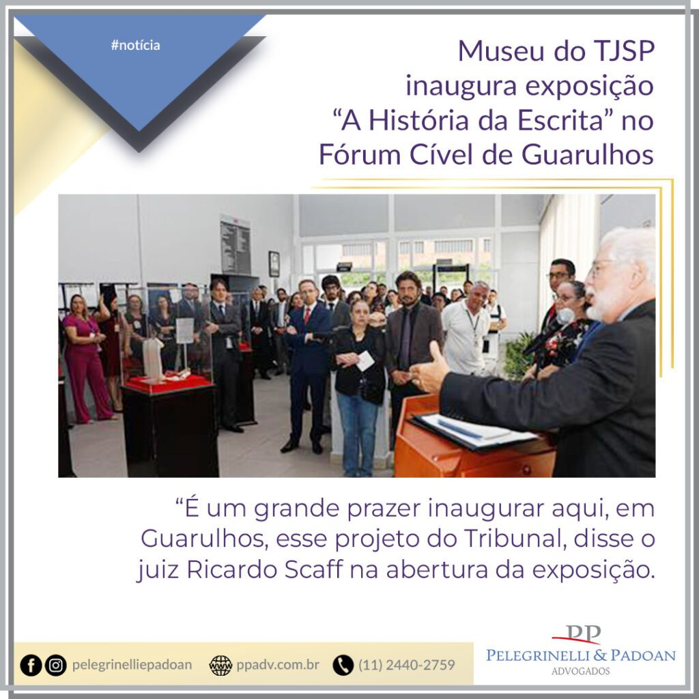

Museu do TJSP inaugura exposição “A História da Escrita” no Fórum Cível de Guarulhos

O Museu do Tribunal de Justiça de São Paulo promoveu, nesta terça-feira (28), a abertura da exposição itinerante “A História da Escrita” no Fórum Cível de Guarulhos. A mostra traz uma abordagem histórica da evolução da escrita, com foco nas inúmeras formas e suportes utilizados no decorrer de séculos, e estará aberta para visitação gratuita até o dia 28 de abril, de segunda a sexta-feira, das 13 às 17 horas. Depois, a seguirá para o Fórum Criminal de Guarulhos, entre os dias 2 e 31 de maio.
O evento contou com a participação do presidente da Comissão de Gestão da Memória da Corte e coordenador do Museu do TJSP, desembargador Octavio Augusto Machado de Barros Filho, que representou o presidente do Tribunal, desembargador Ricardo Mair Anafe. Também estavam presentes o coordenador da área de Estudos em História e Memória da Escola Paulista da Magistratura e integrante da Comissão, juiz Carlos Alexandre Böttcher; o diretor do fórum, juiz Ricardo Felício Scaff; e o delegado titular da Seccional de Policia Civil de Guarulhos, José Aparecido Sanches Severo, além de magistrados, autoridades civis e militares e convidados.
“É um grande prazer inaugurar aqui, em Guarulhos, esse projeto do Tribunal. As pessoas procuram o Poder Judiciário para resolver um problema e, com a exposição, conseguimos humanizar o espaço e oferecer um pouco de cultura ao cidadão guarulhense nesse momento”, disse o juiz Ricardo Scaff na abertura da exposição.
O desembargador Octavio Machado de Barros Filho reforçou o caráter humanizador da iniciativa, além da importância da preservação da memória do Judiciário em todas as comarcas do Estado. “Essa exposição itinerante é a primeira de uma série que pretendemos fazer, não só sobre esse tema, em várias unidades do Tribunal de Justiça, para agregar, divulgar e preservar. Sem isso, nós não conseguiremos produzir nada, pois sempre partimos de algo que já existe e deixamos o caminho pronto para outra geração trilhar. Essa preservação é uma responsabilidade muito grande”, afirmou desembargador.
O juiz Carlos Alexandre Böttcher destacou a oportunidade de levar a outras comarcas todo o trabalho de pesquisa e preservação desenvolvido pela Gestão da Memória do TJSP. O magistrado é diretor do Foro Regional de Itaquera e a mostra “A História da Escrita” também será exibida no local, com data a definir. “Uma das funções primordiais de um museu é a comunicação, pois não basta ter um acervo fechado se não pudermos mostrar arte e cultura para outros palcos. Aqui, o Museu do TJSP sai de sua sede original, no Palacete Conde de Sarzedas, para esse encontro com outra comarca”, disse o magistrado.
A abertura de exposição também foi prestigiada por representantes de diversas instituições. “Gostaria de parabenizar a iniciativa e agradecer pelo fato de o município receber essa exposição por tantos dias”, afirmou o secretário municipal de Justiça de Guarulhos, Airton Trevisan, representando o prefeito da cidade. “É de suma importância levar conhecimento a todos e saber exibir o acervo do Tribunal de Justiça”, disse o diretor do Instituto de Identificação Ricardo Gumbleton Daunt, delegado de Polícia Caetano Paulo Filho, representando o delegado-geral de Polícia de São Paulo. “Em um país com desigualdade tão grande, trazer uma exposição de arte e cultura para quem é a autoridade máxima, que é o povo, é uma atitude absolutamente louvável”, declarou o presidente da Ordem dos Advogados do Brasil – Subseção de Guarulhos, Abner Alves Vidal. “Parabenizo o TJ pela iniciativa e trarei meus alunos para fazer uma visita”, contou a professora Ossanna Tolmajian, docente da FIG-Unimesp.
Sobre a exposição – Dispostos pelo salão, sete cubos expositores revelam a história da escrita, desde a Mesopotâmia, onde foram localizados os primeiros registros de comunicação feitos pelo homem em argila; até o surgimento do papel, na China em 105 a.C, passando pelo papiro, pergaminho e outras formas de escrita. A mostra perpassa, ainda, muitas outras narrativas, percorrendo diversos lugares do mundo. O público pode conferir presencialmente, até o final de maio, nos fóruns Cível e Criminal de Guarulhos, de segunda a sexta-feira, das 13h às 17h.
Serviço – A História da Escrita – Comarca de Guarulhos
De 29 de março a 28 de abril, no Fórum Cível (Rua dos Crisântemos, 29 – térreo – Vila Tijuco)
De 2 a 31 de maio, no Fórum Criminal (Rua José Maurício, 103 – Centro)
Horário: segunda a sexta, das 13h às 17h
Mais fotos no Flickr.
Comunicação Social TJSP – RD (texto e fotos).